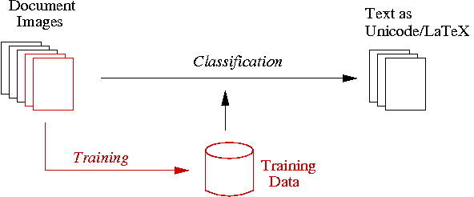

Last modified: April 28, 2025
Contents
This documentation is for those who want to use the toolkit for polytonal Greek OCR, but are not interested in extending the toolkit itself.
The toolkit provides the functionality to segment an image page into text lines, words and characters, to sort them in reading-order, and to generate an output string.
Before you can use the OCR toolkit, you must first train characters from sample pages, which will then be used by the toolkit for classifying characters:
Hence the proper use of this toolkit requires the following two steps:
There are two options to use this toolkit: you can either use the script greekocr4gamera as provided by the toolkit, or you can build your own recognition scripts with the aid of the python library functions provided by the toolkit. Both alternatives are described below.
As explained in the GreekOCR toolkit overview, you must create different training data, depending on the approach for dealing with accents:
The wholistic approach has the disadvantage that the training data will generally be incomplete because rare combinations are unlikely to appear in the samples used for training. Moreover, it requires much more training effort. Depending on the documents under consideration, it might however be that the one or the other approach yields better results; testing both approaches might therefore pay off.
A list of CCs for training using the wholistic or separatistic algorithms on image can be created with:
from gamera.toolkits.greekocr import GreekOCR
from gamera import knn
classifier = knn.kNNInteractive()
g = GreekOCR("wholistic") #or separatistic
ccs = g.get_page_glyphs(image)
classifier.display(ccs, image)
Note
When accents frequently touch the characters, you should train these combinations even for the separatistic approach, because the glyph segmentation is based on a connected component analysis, which cannot split touching symbols.
For "separatistic" recognition, the characters and accents must be trained separately. The class names for the characters must correspond to the names in the Unicode table Greek, and the names for the accents must correspond to the Unicode table Combining Diacritical Marks. The latter typically start with the word COMBINING. For punctuation marks like "full stop", the names from the Unicode table Basic Latin can be used.
The following table lists some examples. For touching characters or accents, you can combine their Unicode names with AND, as in the following table demonstrated for the touching sigma and tau and the touching comma and acute:
| Character | Unicode Name(s) | Class Name |
|---|---|---|
| GREEK CAPITAL LETTER TAU | greek.capital.letter.tau | |
| GREEK SMALL LETTER DELTA | greek.small.letter.delta | |
| COMBINING GREEK PERISPOMENI | combining.greek.perispomeni | |
| COMBINING COMMA ABOVE | combining.comma.above | |
| HYPHEN-MINUS | hyphen-minus | |
|
greek.small.letter.sigma.and.greek.small.letter.tau | |
|
combining.comma.above.and.combining.acute.accent |
For "wholistic" recognition, no isolated accents are trianed. In contrast, each character is trained in all occuring combinations with accents. The Unicode names of the character and the accents are concatenated with the word and, as shown in the following examples:
| Character | Class Name |
|---|---|
| greek.small.letter.alpha | |
| greek.small.letter.alpha.and.combining.acute.accent | |
| greek.small.letter.alpha.and.combining.comma.above | |
| greek.small.letter.alpha.and.combining.comma.above.and.combining.acute.accent | |
| greek.small.letter.alpha.and.combining.greek.perispomeni |
The order of the accents in the class names is not important, because the accent order will be normalized automatically during the recognition process.
The greekocr4gamera script takes an image and already trained data and segments the picture into single glyphs. The training-data is used to classify those glyphs and converts them into an output code. The output code can be a Unicode string or a LaTeX document utilizing the Teubner style. The output is written to standard-out or can optionally be stored in a file.
The end user application greekocr4gamera will be installed to /usr/bin or /usr/local/bin unless you habe explicitly chosen a different location. Its synopsis is:
greekocr4gamera -x <trainingdata> [options] <imagefile>
Options can be in short (one dash, one character) or long form (two dashes, string). When called with -h, -? or any other invalid option, a usage message will be printed. The valid options are:
See the subdirectory example and the file README.md therein for an example and different command lines for generating output.
If you want to write your own scripts for recognition, you can use greekocr4gamera as a good starting point.
In Greek OCR functionality is implemented in the class GreekOCR, which must import at the beginning of your script:
from gamera.toolkits.greekocr import GreekOCR
After that you can instantiate a GreekOCR object and can recognize an image with the following methods:
g = GreekOCR()
g.mode = "wholistic" # or "separatistic"
g.load_trainingdata("wholistic.xml")
image = load_image("imagefile.png")
output = g.process_image(image)
print output
This will print the Unicode result to stdout. To save it to a file either in Unicode or LaTeX with the Teubner style, use the following methods:
g.save_text_unicode("unicode-output.txt")
g.save_text_teubner("teubner-output.tex")
For more information on how to fine control the recognition process, see the developer's documentation.